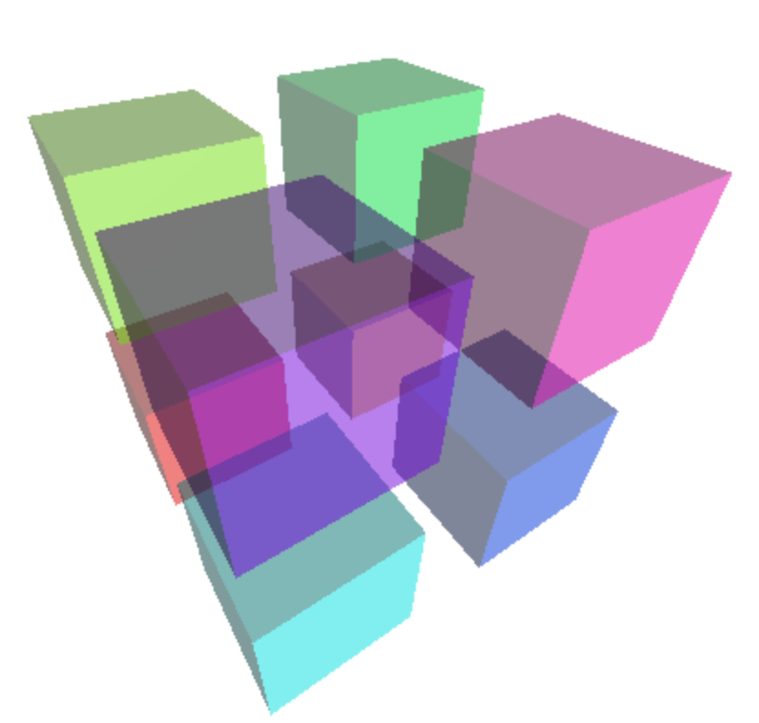
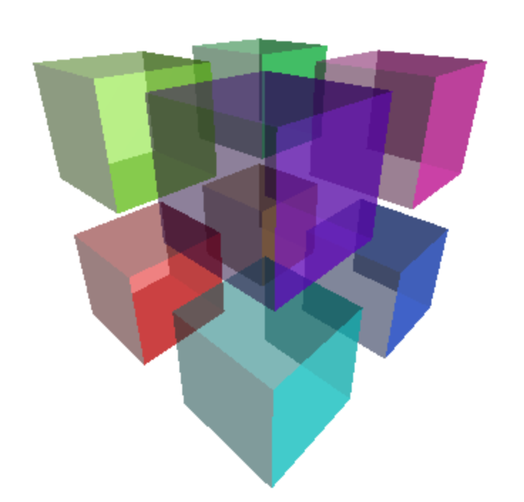
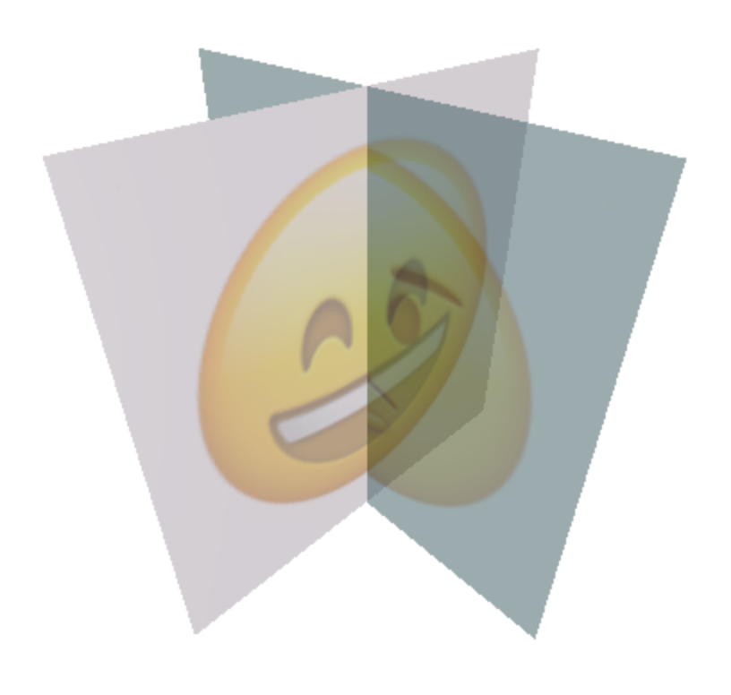
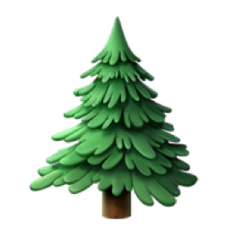
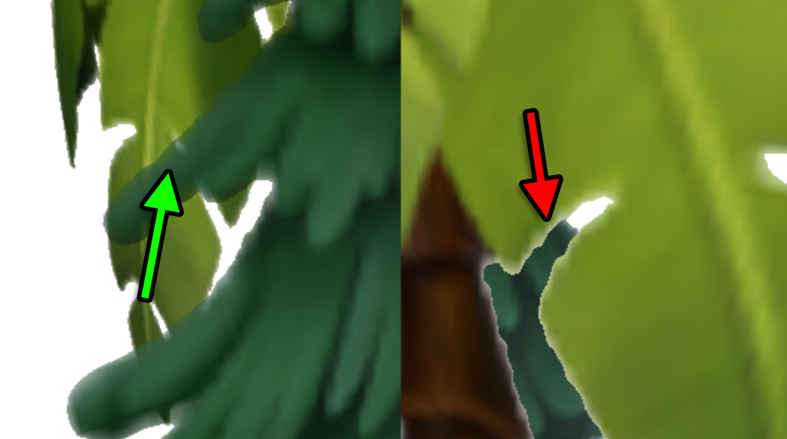

three.js 中的透明度既简单又复杂。
首先，我们将介绍简单的部分。让我们创建一个场景，里面有 8 个立方体，排列成 2x2x2 的网格。
我们将从按需渲染的文章中的示例开始，该示例有 3 个立方体，然后将其修改为 8 个。首先，让我们将 makeInstance 函数更改为接受 x、y 和 z
-function makeInstance(geometry, color) {
+function makeInstance(geometry, color, x, y, z) {
const material = new THREE.MeshPhongMaterial({color});
const cube = new THREE.Mesh(geometry, material);
scene.add(cube);
- cube.position.x = x;
+ cube.position.set(x, y, z);
return cube;
}
然后我们可以创建 8 个立方体
+function hsl(h, s, l) {
+ return (new THREE.Color()).setHSL(h, s, l);
+}
-makeInstance(geometry, 0x44aa88, 0);
-makeInstance(geometry, 0x8844aa, -2);
-makeInstance(geometry, 0xaa8844, 2);
+{
+ const d = 0.8;
+ makeInstance(geometry, hsl(0 / 8, 1, .5), -d, -d, -d);
+ makeInstance(geometry, hsl(1 / 8, 1, .5), d, -d, -d);
+ makeInstance(geometry, hsl(2 / 8, 1, .5), -d, d, -d);
+ makeInstance(geometry, hsl(3 / 8, 1, .5), d, d, -d);
+ makeInstance(geometry, hsl(4 / 8, 1, .5), -d, -d, d);
+ makeInstance(geometry, hsl(5 / 8, 1, .5), d, -d, d);
+ makeInstance(geometry, hsl(6 / 8, 1, .5), -d, d, d);
+ makeInstance(geometry, hsl(7 / 8, 1, .5), d, d, d);
+}
我也调整了摄像机
const fov = 75; const aspect = 2; // the canvas default const near = 0.1; -const far = 5; +const far = 25; const camera = new THREE.PerspectiveCamera(fov, aspect, near, far); -camera.position.z = 4; +camera.position.z = 2;
将背景设置为白色
const scene = new THREE.Scene();
+scene.background = new THREE.Color('white');
并添加了第二个光源，以便立方体的所有面都有光照。
-{
+function addLight(...pos) {
const color = 0xFFFFFF;
const intensity = 1;
const light = new THREE.DirectionalLight(color, intensity);
- light.position.set(-1, 2, 4);
+ light.position.set(...pos);
scene.add(light);
}
+addLight(-1, 2, 4);
+addLight( 1, -1, -2);
要使立方体透明，我们只需设置transparent标志，并设置opacity透明度级别，1 表示完全不透明，0 表示完全透明。
function makeInstance(geometry, color, x, y, z) {
- const material = new THREE.MeshPhongMaterial({color});
+ const material = new THREE.MeshPhongMaterial({
+ color,
+ opacity: 0.5,
+ transparent: true,
+ });
const cube = new THREE.Mesh(geometry, material);
scene.add(cube);
cube.position.set(x, y, z);
return cube;
}
这样我们就得到了 8 个透明立方体
在示例中拖动以旋转视图。
看起来很简单，但……仔细看看。方块缺少了背面。

我们在材料文章中学习过side材质属性。
所以，我们将其设置为THREE.DoubleSide，让每个方块的两面都能被绘制。
const material = new THREE.MeshPhongMaterial({
color,
map: loader.load(url),
opacity: 0.5,
transparent: true,
+ side: THREE.DoubleSide,
});
的每个孩子的
转动它看看。看起来它有点起作用，因为我们可以看到背面，但仔细观察有时还是看不到。

这是因为3D对象通常的绘制方式。对于每个几何体，每个三角形都是一次绘制一个。当绘制三角形的每个像素时，会记录两件事。一是该像素的颜色，二是该像素的深度。当绘制下一个三角形时，对于每个像素，如果深度比之前记录的深度更深，则不会绘制像素。
这对于不透明物体效果很好，但对透明物体就会失败。
解决方案是对透明物体进行排序，并先绘制后面的物体，再绘制前面的物体。THREE.js 会对像 Mesh 这样的对象进行处理，否则第一个示例就在一些立方体互相遮挡的情况下会失败。不幸的是，对于单个三角形来说，排序会非常慢。
立方体有 12 个三角形，每个面有 2 个，它们被绘制的顺序与 构建几何体的顺序相同，所以取决于我们观察的方向，离摄像机更近的三角形可能会先被绘制。在这种情况下，后面的三角形就不会被绘制。这就是为什么有时我们看不到背面的原因。
对于像球体或立方体这样的凸对象，一种解决方法是将每个立方体添加到场景中两次。一次使用只绘制背面三角形的材质，另一次使用只绘制正面三角形的材质。
function makeInstance(geometry, color, x, y, z) {
+ [THREE.BackSide, THREE.FrontSide].forEach((side) => {
const material = new THREE.MeshPhongMaterial({
color,
opacity: 0.5,
transparent: true,
+ side,
});
const cube = new THREE.Mesh(geometry, material);
scene.add(cube);
cube.position.set(x, y, z);
+ });
}
这样看起来似乎有效。
它假设 three.js 的排序是稳定的。也就是说，因为我们先添加了 side: THREE.BackSide 网格，并且它位于完全相同的位置，所以它会在 side: THREE.FrontSide 网格之前被绘制。
让我们创建两个相交的平面（在删除所有与立方体相关的代码之后）。我们将给每个平面添加纹理。
const planeWidth = 1;
const planeHeight = 1;
const geometry = new THREE.PlaneGeometry(planeWidth, planeHeight);
const loader = new THREE.TextureLoader();
function makeInstance(geometry, color, rotY, url) {
const texture = loader.load(url, render);
const material = new THREE.MeshPhongMaterial({
color,
map: texture,
opacity: 0.5,
transparent: true,
side: THREE.DoubleSide,
});
const mesh = new THREE.Mesh(geometry, material);
scene.add(mesh);
mesh.rotation.y = rotY;
}
makeInstance(geometry, 'pink', 0, 'resources/images/happyface.png');
makeInstance(geometry, 'lightblue', Math.PI * 0.5, 'resources/images/hmmmface.png');
这一次我们可以使用 side: THREE.DoubleSide，因为我们一次只能看到平面的一面。还要注意，我们将 render 函数传递给纹理加载函数，以便在纹理加载完成后重新渲染场景。这是因为此示例是 按需渲染 而不是连续渲染。
同样，我们看到类似的问题。

这里的解决方案是手动将每个面板拆分成两个面板，从而真正避免交叉。
function makeInstance(geometry, color, rotY, url) {
+ const base = new THREE.Object3D();
+ scene.add(base);
+ base.rotation.y = rotY;
+ [-1, 1].forEach((x) => {
const texture = loader.load(url, render);
+ texture.offset.x = x < 0 ? 0 : 0.5;
+ texture.repeat.x = .5;
const material = new THREE.MeshPhongMaterial({
color,
map: texture,
opacity: 0.5,
transparent: true,
side: THREE.DoubleSide,
});
const mesh = new THREE.Mesh(geometry, material);
- scene.add(mesh);
+ base.add(mesh);
- mesh.rotation.y = rotY;
+ mesh.position.x = x * .25;
});
}
如何完成这一步由你自己决定。如果我使用像Blender这样的建模软件，我可能会通过调整纹理坐标手动完成。然而在这里，我们使用的是PlaneGeometry，它默认会将纹理拉伸到整个平面上。就像我们之前讨论过的一样，通过设置texture.repeat和texture.offset，我们可以缩放并移动纹理，使每个平面显示人脸纹理的正确一半。
上面的代码还创建了一个 Object3D 并将两个平面设为它的子对象。看起来旋转父 Object3D 比在没有它的情况下做计算要容易。
这个解决方法实际上只适用于像两个不改变交点位置的简单平面这种情况。
对于有纹理的对象，另一种解决方法是设置 alpha 测试。
Alpha 测试是一个 alpha 的阈值，低于这个值 three.js 不会绘制像素。如果我们根本不绘制该像素，那么上述提到的深度问题就会消失。对于边缘相对清晰的纹理，这个方法效果相当好。例子包括植物或树上的叶子纹理，或者常见的一片草地。
让我们在两个平面上试试。首先，我们使用不同的纹理。上面的纹理是完全不透明的。这两个纹理使用了透明度。

回到相交的两个平面（在我们分割它们之前），让我们使用这些纹理并设置一个 alphaTest。
function makeInstance(geometry, color, rotY, url) {
const texture = loader.load(url, render);
const material = new THREE.MeshPhongMaterial({
color,
map: texture,
- opacity: 0.5,
transparent: true,
+ alphaTest: 0.5,
side: THREE.DoubleSide,
});
const mesh = new THREE.Mesh(geometry, material);
scene.add(mesh);
mesh.rotation.y = rotY;
}
-makeInstance(geometry, 'pink', 0, 'resources/images/happyface.png');
-makeInstance(geometry, 'lightblue', Math.PI * 0.5, 'resources/images/hmmmface.png');
+makeInstance(geometry, 'white', 0, 'resources/images/tree-01.png');
+makeInstance(geometry, 'white', Math.PI * 0.5, 'resources/images/tree-02.png');
在运行此代码之前，我们先添加一个小的 UI，这样我们可以更方便地调整 alphaTest 和 transparent 设置。我们将使用 lil-gui，就像我们在 three.js 场景图文章 中介绍的那样。
首先，我们将为 lil-gui 创建一个辅助函数，用于将场景中的每个材质设置为一个值
class AllMaterialPropertyGUIHelper {
constructor(prop, scene) {
this.prop = prop;
this.scene = scene;
}
get value() {
const {scene, prop} = this;
let v;
scene.traverse((obj) => {
if (obj.material && obj.material[prop] !== undefined) {
v = obj.material[prop];
}
});
return v;
}
set value(v) {
const {scene, prop} = this;
scene.traverse((obj) => {
if (obj.material && obj.material[prop] !== undefined) {
obj.material[prop] = v;
obj.material.needsUpdate = true;
}
});
}
}
然后我们将添加 gui
const gui = new GUI();
gui.add(new AllMaterialPropertyGUIHelper('alphaTest', scene), 'value', 0, 1)
.name('alphaTest')
.onChange(requestRenderIfNotRequested);
gui.add(new AllMaterialPropertyGUIHelper('transparent', scene), 'value')
.name('transparent')
.onChange(requestRenderIfNotRequested);
当然我们还需要包含 lil-gui
import * as THREE from 'three';
import {OrbitControls} from 'three/addons/controls/OrbitControls.js';
+import {GUI} from 'three/addons/libs/lil-gui.module.min.js';
这是效果
你可以看到它有效，但放大观察，你会看到有一个平面上有白线。

这是之前提到的相同深度问题。那个平面先被绘制，所以后面的平面没有被绘制。没有完美的解决方案。调整 alphaTest 和/或关闭 transparent 来找到适合你用例的解决方案。
本文的结论是完全透明非常困难。有问题、权衡和变通方法。
例如，假设你有一辆车。汽车通常四面都有挡风玻璃。如果你想避免上述排序问题，你必须把每个窗户做成单独的对象，这样 three.js 才能对窗户进行排序并以正确的顺序绘制它们。
如果你制作一些植物或草地，alpha 测试解决方案很常见。
你选择哪种解决方案取决于你的需求。